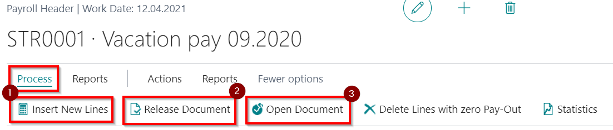

Prepayments
Prepayments are used to pay for vacation leave (etc. events from absence register), and also for some kind of bonuses (entered through Component Register) what need to be paid prior to salary before the month end. When creating prepayments, taxes are deducted from calculated amounts in appropriate period. When creating a Salary list, payment done with prepayment lists will be included in deduction field and will reduce the total payout amount.
Before creating a prepayment list, all known data should be entered to Absence Register and Component Register.
If calculation need to be separated by kinds, then can be used filters in the Filters tab, where criterias can be set to get more precise positions to be paid with prepayment. For example if you will not set any filter, for payout will be processed all open entries from absence Register and Component register what relates to the selected employee.
Tip
If together the vacation leave you need to pay also salary for the period till the start of vacation, then you need to enter also the absence card with cause of absence code No. ALGA_PER (salary for the period).
New prepayment list can be created by clicking on shortcut + Prepayment List in the Role Center or with a help of the system search. All prepayment lists are compiled in the Prepayment List register.
The number of the list will be assigned automatically. Next choose Year and Month (automatically filled with current year and month).
Automatic generation of the lines will be stated by clicking on the button Process - Insert New Lines ( ).
).
After the advance list generation and initial checks, it is recommendable to change the status from Open to Released ( ). This ensures calculating data protection against accidental corrections. If necessary, the status can be changed back to Open (
). This ensures calculating data protection against accidental corrections. If necessary, the status can be changed back to Open ( ).
).

At the Prepayments List is available following::
- Pay Slip – Possibility to print and send salary pay slips on prepayment.
- Export to Payment Journal – payment journal entries will be created and ready to sent to bank and post in General Ledger.
- Detailed Salary List – Advance list printout for the check and/or approvals.
Transcript of average gain
To open average gain transcript, choose particular employee and in the tab Lines click on Line - Average Gain.
In case if employee has a normal working time Salary type, then by calculating the average gain, Days/ Hours earnings will be compared with the minimum salary. If necessary, the average gain will be increased to the minimum salary level. If the employee has no full time work, then the coefficient will be applied.